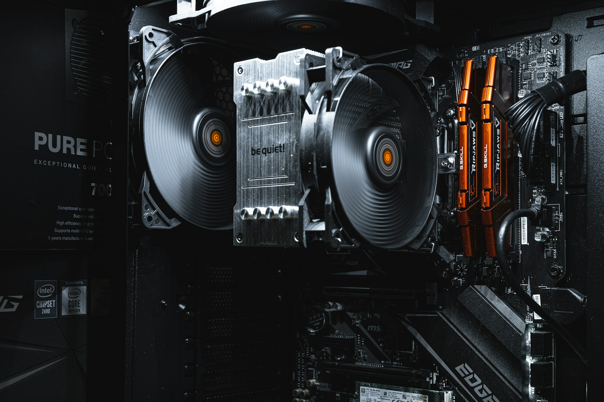

تركيب حاسوب شخصي من الصفر ليس بالأمر الصعب كما يتصوره الكثيرون. مع الأدوات المناسبة وبعض الصبر، يمكنك بناء جهاز احترافي يناسب احتياجاتك تماماً وبتكلفة أقل من شراء جهاز جاهز. في هذا الدليل الشامل، نأخذك خطوة بخطوة عبر المراحل الأربع الأساسية: من اختيار القطع وحتى الاختبار النهائي.
كيف تركب حاسوبك بنفسك؟
2026
10 دقائق للقراءة
4 خطوات

مكونات الحاسوب الأساسية
كل ما تحتاجه لبناء حاسوبك من الصفر
انقر للتفاصيل ←
المعالج — CPU
Intel / AMD
انقر للتفاصيل ←
اللوحة الأم
Motherboard
انقر للتفاصيل ←
ذاكرة الوصول
RAM — DDR4/DDR5
انقر للتفاصيل ←
بطاقة الرسومات
GPU — NVIDIA/AMD
انقر للتفاصيل ←
وحدة التخزين
SSD NVMe / SATA
انقر للتفاصيل ←
مصدر الطاقة
PSU — 80+ Bronze
انقر للتفاصيل ←
نظام التبريد
CPU Cooler / AIO
انقر للتفاصيل ←
هيكل الجهاز
Case / Tower
الخطوات الأربع للتركيب
انقر على كل خطوة لقراءة التفاصيل الكاملة
1
الخطوة الأولى
إختيار القطع المناسبة

تُعدّ مرحلة اختيار القطع من أهم مراحل تجميع الحاسوب، لأن أي خطأ في التوافق بين المكونات سيكلفك وقتاً ومالاً. لذا يجب أن تبدأ بتحديد هدفك بوضوح: هل تريد حاسوباً للألعاب؟ للتصميم الجرافيكي؟ لتحرير الفيديو؟ أم للاستخدام المكتبي اليومي؟ بناءً على هذا الهدف تحدد الميزانية ثم تبدأ في اختيار المكونات.
المعالج (CPU) : هو قلب الجهاز. عليك الاختيار بين Intel و AMD حسب الميزانية والاستخدام. تأكد من أن المعالج يدعم نفس Socket الموجود في اللوحة الأم — مثلاً Intel LGA1700 أو AMD AM5. المعالجات ذات الأنوية الكثيرة (8 نوى وما فوق) هي الأنسب للمهام الثقيلة.
اللوحة الأم (Motherboard) : هي العمود الفقري الذي يوصل كل شيء ببعضه. اختر لوحة تدعم معالجك وذاكرتك، وتوفر عدد الفتحات PCIe وUSB الذي تحتاجه. توجد ثلاثة أحجام رئيسية: ATX (الكاملة)، Micro-ATX، و Mini-ITX.
الذاكرة العشوائية (RAM) : الحد الأدنى الموصى به اليوم هو 16 جيجابايت. إن كنت تعمل في مجال المونتاج أو الألعاب الحديثة فاختر 32 جيجابايت. تأكد من نوع الذاكرة — DDR4 أو DDR5 — حسب ما تدعمه اللوحة الأم. اشترِ دائماً الذاكرة على شكل كيتات ثنائية (Dual Channel) لأداء أفضل.
بطاقة الرسومات (GPU) : للألعاب والتصميم هي أهم قطعة في الجهاز. توجد بطاقات NVIDIA (سلسلة RTX) وAMD (سلسلة RX). تأكد من أن مصدر الطاقة يكفي لتشغيلها، وأن الهيكل يتسع لأبعادها.
وحدة التخزين (SSD) : احرص على اختيار SSD من نوع NVMe M.2 لسرعة تحميل فائقة، وليس SATA التقليدي. 500 جيجابايت كحد أدنى لنظام التشغيل، و1 تيرابايت للاستخدام المريح.
مصدر الطاقة (PSU) : لا تقتصد في اختياره. احسب مجموع استهلاك كل قطعة ثم أضف هامش 20-30٪. اختر دائماً مصدر طاقة معتمد 80+ Bronze على الأقل. مصادر الطاقة الرخيصة المجهولة قد تحرق جهازك بالكامل.
استخدم موقع PCPartPicker مجاناً للتحقق من توافق جميع القطع قبل الشراء، وحساب استهلاك الطاقة الإجمالي تلقائياً.
2
الخطوة الثانية
التجميع والتركيب الفني

قبل أي شيء، احرص على تفريغ الكهرباء الساكنة من جسمك بلمس سطح معدني مؤرض، أو باستخدام سوار مضاد للإلكتروستاتيك. الكهرباء الساكنة تستطيع تدمير قطعك الثمينة في لحظة. ضع اللوحة الأم على غلافها الكرتوني العازل أثناء العمل عليها خارج الهيكل.
تركيب المعالج (CPU) : افتح مزلاج socket اللوحة الأم برفق. أمسك المعالج من حوافه فقط ولا تلمس أطراف الاتصال أبداً. اضبط اتجاهه عبر السهم الصغير المنقوش في الزاوية، ثم ضعه بدون ضغط — يجب أن يسقط في مكانه وحده. أغلق المزلاج بحزم حتى تسمع صوت طقطقة.
مادة التبريد الحرارية (Thermal Paste) : ضع كمية صغيرة من معجون التبريد — بحجم حبة أرز أو نقطة صغيرة — في وسط المعالج. لا تفرط في الكمية. ثم ثبت برج التبريد أو المروحة فوقه محكماً بالمسامير المخصصة.
تركيب ذاكرة RAM : انظر دليل اللوحة الأم لمعرفة الفتحات الصحيحة لـ Dual Channel (عادةً الفتحتان A2 وB2). اضغط الذاكرة بقوة حتى تسمع صوت تثبيت من الجانبين.
تجهيز الهيكل وتركيب اللوحة الأم : ركب الـ I/O Shield (واقهة المنافذ الخلفية) في الهيكل أولاً قبل أي شيء. ثم ضع الـ Standoffs (المسامير الرافعة) في الأماكن الصحيحة، وأدخل اللوحة الأم محاذياً منافذها مع الـ I/O Shield. ثبتها بالمسامير المخصصة.
تركيب SSD M.2 : أدخل SSD في فتحة M.2 بزاوية 30 درجة، ثم ادفعه للأسفل وثبته بالمسمار الصغير.
تركيب بطاقة الرسومات : أزل لسانَي الحماية من الهيكل المقابلَين لفتحة PCIe x16. أدخل بطاقة الرسومات بثبات حتى تسمع صوت تثبيت المزلاج. وصّل كبلات الطاقة PCIe من مصدر الطاقة إليها.
توصيل مصدر الطاقة والأسلاك : ثبت PSU في الهيكل ووصّل الكبلات: 24 Pin للوحة الأم، 8 Pin للمعالج، وكبلات SATA أو Molex الأخرى. نظّم الأسلاك خلف لوحة الهيكل (Cable Management) لتحسين تدفق الهواء وجمالية التركيب.
لا تشغّل الجهاز مطلقاً قبل التأكد من وصل كبل الطاقة 8-Pin الخاص بالمعالج — كثيراً ما يُنسى وهو الأكثر أهمية.
قبل وضع اللوحة الأم في الهيكل، جرّب تشغيل الجهاز على سطح خارجياً لاختبار أساسي سريع (POST Test) للتأكد من عمل جميع القطع.
3
الخطوة الثالثة
تثبيت نظام التشغيل

بعد تركيب الجهاز وتشغيله للمرة الأولى، يجب أن تظهر شاشة BIOS/UEFI تلقائياً. هذا يعني أن الجهاز يعمل بشكل صحيح. إن لم تظهر أي صورة على الشاشة، راجع توصيلات الذاكرة والمعالج وكبل الشاشة.
تحضير فلاشة الإقلاع (Bootable USB) : على حاسوب آخر، حمّل أداة Rufus (مجانية) وملف ISO لنظام Windows من الموقع الرسمي لمايكروسوفت، أو أي توزيعة Linux كـ Ubuntu أو Linux Mint. أدخل فلاشة USB لا تقل عن 8 جيجابايت وابدأ عملية الحرق — لا تقاطع العملية.
إعدادات BIOS : ادخل إلى BIOS بالضغط على F2 أو Delete أو F12 لحظة تشغيل الجهاز (حسب اللوحة الأم). في BIOS، توجه إلى قسم Boot وغيّر أولوية الإقلاع لتضع فلاشة USB في المرتبة الأولى. احرص أيضاً على تفعيل XMP/EXPO لضمان عمل الذاكرة بسرعتها الأصلية المدوّنة على العلبة.
تثبيت Windows 11 : أعد تشغيل الجهاز وهو سيقلع من الفلاشة. اتبع مراحل التثبيت: اختر لغة العرض، اقبل شروط الترخيص، ثم اختر "تثبيت مخصص" (Custom Install) وحدد SSD الخاص بك كوجهة. ستستغرق العملية من 10 إلى 25 دقيقة حسب سرعة جهازك.
تثبيت التعريفات (Drivers) : هذه من أهم مراحل ما بعد التثبيت. ابدأ بتعريف بطاقة الرسومات من موقع NVIDIA أو AMD مباشرة. ثم تعريف اللوحة الأم من موقع الشركة المصنعة (ASUS، MSI، Gigabyte…). استخدم Windows Update لتثبيت باقي التعريفات العامة.
التحديثات الأمنية : فور الانتهاء من التثبيت، قم بتشغيل Windows Update وثبّت جميع التحديثات المتاحة. هذا يضمن حماية جهازك وأداءه المثالي منذ اليوم الأول.
فعّل XMP أو EXPO في BIOS مباشرةً بعد التركيب — بدونه ستعمل ذاكرتك بالسرعة الافتراضية الأبطأ وليس بسرعتها المُعلنة على العلبة.
4
الخطوة الرابعة
الاختبارات والإعداد النهائي

مبروك لقد انتهيت من التركيب والتثبيت! لكن لا تعتبر العمل منتهياً حتى تجري مجموعة من الاختبارات للتأكد من أن كل شيء يعمل بشكل صحيح ومستقر. هذه المرحلة تكشف عن أي مشكلة قبل أن تتفاقم.
التحقق من التعرف على القطع : نزّل وشغّل برنامج CPU-Z للتحقق من أن المعالج والذاكرة واللوحة الأم معرَّفة بشكل صحيح وأن الذاكرة تعمل بسرعتها الأصلية (XMP). شغّل GPU-Z للتحقق من بطاقة الرسومات وأنها تعمل في وضع PCIe x16 الكامل.
مراقبة درجات الحرارة : استخدم برنامج HWMonitor أو MSI Afterburner لمتابعة درجات حرارة المعالج وبطاقة الرسومات والقرص الصلب أثناء الراحة وأثناء التحميل. درجة حرارة المعالج في الوضع الاعتيادي يجب أن تكون بين 30 و50 درجة مئوية.
اختبار ضغط المعالج (CPU Stress Test) : شغّل برنامج Prime95 واختر Small FFTs لمدة 15-30 دقيقة. راقب درجة حرارة المعالج خلالها — يجب ألا تتجاوز 80-85 درجة مئوية في معظم المعالجات. إن تجاوزت ذلك فراجع تركيب برج التبريد ومادة الحرارية.
اختبار ضغط بطاقة الرسومات : شغّل FurMark لمدة 10-15 دقيقة وتابع درجات الحرارة. يجب أن تستقر تحت 85-90 درجة مئوية. إن انقطعت الشاشة أو ظهرت مربعات ملونة أو Artifacts، فقد تكون بطاقة الرسومات غير موصولة جيداً أو مصدر الطاقة غير كافٍ.
اختبار سرعة SSD : شغّل CrystalDiskMark للتحقق من سرعات القراءة والكتابة الفعلية لـ SSD الخاص بك ومقارنتها بالمواصفات المعلنة من الشركة المصنعة.
اختبار الاستقرار العام : شغّل Cinebench R23 لاختبار أداء المعالج وقارنه بالأرقام المرجعية لنموذج معالجك. هذا يؤكد أن الجهاز يعمل بكامل طاقته دون أي مشكلة في التبريد أو الطاقة.
إن اجتازت جميع الاختبارات بنجاح فحاسوبك جاهز بالكامل! يمكنك الآن تثبيت برامجك المفضلة والاستمتاع بجهازك الجديد الذي بنيته بيدك.
قم بعمل نسخة احتياطية لصورة النظام بعد إعداده كاملاً باستخدام Macrium Reflect — ستوفر عليك ساعات من إعادة التثبيت في حال حدوث أي مشكلة مستقبلاً.